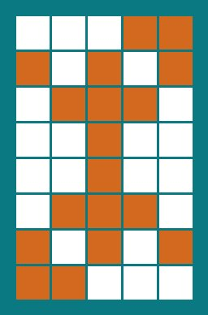

Welcome! The little device sitting on your desk is a Busy Light — a tiny, always-on assistant that lets the people around you (and you yourself) know, at a glance, whether you're in a meeting, available, working remotely, or off the clock. It talks to your Microsoft 365 calendar over the internet and lights up the appropriate color all on its own. No app, no logging in, no fuss.
This guide walks you through what each of the five colored buttons does, what the lights mean during normal operation, and what those blinks and flashes mean when it first powers up. Keep it nearby for the first few days — after that, you probably won't need it.
Your Busy Light has five colored buttons, each paired with an LED of the same color. From left to right (or top to bottom, depending on how it's mounted), they are:
Red Green Blue Yellow White
Plug it in to any USB power source. That's the entire installation. It will connect to Wi-Fi, sync its clock, find your calendar, and start showing your status. The next time you have a meeting on your work calendar, the red light will come on by itself.
During the workday (8:30 AM–4:30 PM, or your business hours if different), one of these will be true:
| Light | What it means |
|---|---|
| Solid Red | You are in a meeting right now. Do not disturb. |
| Pulsing Red (fading in and out) | A meeting is starting in less than one minute. Wrap up that conversation! |
| Solid Green | You are free and available. Come on in. |
| Solid Blue | It's a remote work day. You aren't at your desk today. |
| All lights off | Outside of business hours. The Busy Light goes dark on its own at the end of the workday and stays dark until the next morning (8:30 AM–4:30 PM by default, or whatever business hours were set for your device). |
Each button has two behaviors — a short press (tap and release) and a long press (hold for about 1.5 seconds). Short presses are your manual overrides, long presses unlock the fun stuff.
Tap any colored button to manually force that color on. The Busy Light will stop following your calendar and just stay that color until you tell it otherwise. Tap the same button again to turn it off entirely.
| Button | Short Press Effect |
|---|---|
| Red | Force Red on (manual "busy" — useful when you're on a phone call that isn't on your calendar) |
| Green | Force Green on (manual "available") |
| Blue | Force Blue on (manual "remote") |
| Yellow | Force Yellow on (whatever you'd like it to mean — "back in 5", "headphones on", etc.) |
| White | Force White on (good for a quick reading light at your desk) |
Hold any button (other than White) for about 1.5 seconds to unlock a light show. Great for parties, end-of-day demos, or just for fun. Tap any button briefly to exit and return to normal operation.
| Hold This Button | What Happens |
|---|---|
| Red (hold) | Double Disco — two random LEDs fade in and out together |
| Green (hold) | Time Travel — all five LEDs fade independently at different speeds |
| Blue (hold) | Color Circle — lights chase smoothly around in a circle |
| Yellow (hold) | Disco — one random LED fades in and out at a time |
| White (hold) | Resume Automatic Mode — go back to following your calendar |
When you first plug the Busy Light in (or whenever it reboots — it restarts itself once a day at around 6:55 AM for reliability), it goes through a quick startup sequence. You'll see a series of blinks while it finds its way onto the network. Here's a quick translation guide:
| What You See | What's Happening |
|---|---|
| Slow green blink | Looking for a known Wi-Fi network and trying to connect. |
| Slow yellow blink | Couldn't find a known network — falling back to setup mode. |
| Three bursts of three fast yellow blinks | Wi-Fi setup mode is active. The Busy Light has created its own temporary Wi-Fi network so you can configure it (see "First-Time Wi-Fi Setup" below). |
| Slow blue blink | Connected to Wi-Fi — syncing the clock with internet time servers. |
| Brief white flash | Time is synced. The Busy Light is now ready and will show your calendar status. |
| Five fast red blinks | Something went wrong — usually a clock sync problem. The device will retry on its own; if it persists, unplug for 10 seconds and plug back in. |
If your Busy Light has never been on your network before — or if your Wi-Fi password has changed — it will go into setup mode (the yellow blink bursts described above). Here's how to get it connected:
You only have to do this once. After that, it remembers your network and will reconnect automatically every time it's powered on.
Here's what a typical day looks like from the Busy Light's perspective:
| If you see… | Try this |
|---|---|
| The light is the wrong color (says I'm busy when I'm free, or vice versa) | Press and hold the White button for 1.5 seconds to resume automatic mode — you may have left it in manual override. |
| No lights at all during the workday | Check the USB power cable. If powered, look for a startup blink sequence. If you only see green or yellow blinks, it's trying to reach the network. |
| Yellow blink bursts that don't stop | The Busy Light needs Wi-Fi setup. See "First-Time Wi-Fi Setup" above. |
| It's been red for hours but I'm not actually in a meeting | Hold the White button for 1.5 seconds to resume automatic mode. If still wrong, unplug for 10 seconds and plug back in. |
| Five fast red blinks on startup | The clock sync failed — usually a temporary network issue. It will retry on its own. If it keeps happening, unplug for 10 seconds and plug back in. |
| Lights (normal use) | |
|---|---|
| Red, solid | In a meeting |
| Red, pulsing | Meeting in < 1 minute |
| Green | Available |
| Blue | Remote day |
| Off | Outside business hours |
| Buttons | |
| Tap any color | Force that color on (manual override) |
| Tap same color again | Turn off |
| Hold White (1.5s) | Resume automatic / calendar mode |
| Hold Red / Green / Blue / Yellow | Light show modes (any tap exits) |